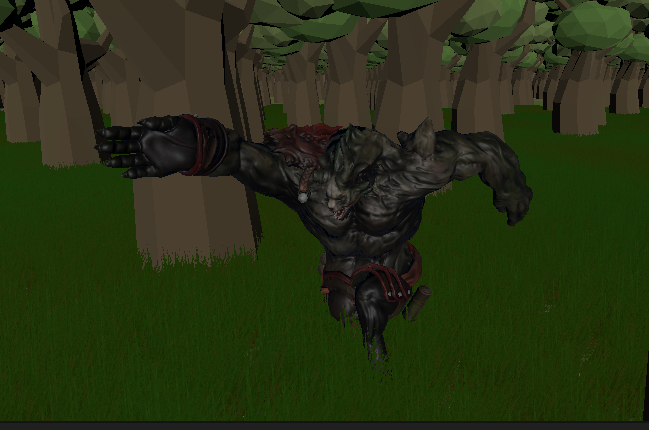
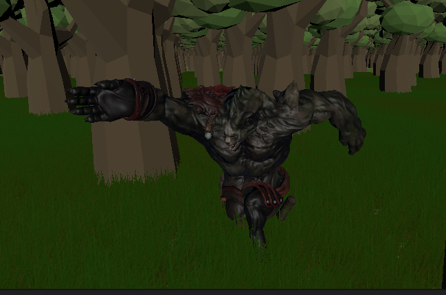

Run From Gary
Platform: PC
Team Size: 1
Project Duration: 1 week
Unity, YouTube, Mixamo (for models and animations)
Platform: PC
Team Size: 1
Project Duration: 1 week
Unity, YouTube, Mixamo (for models and animations)
Run From Gary is a first-person horror game developed as part of a university rapid game design module, where a new game had to be created each week over a 5-week period. This particular project was centered around the theme of camera work. In the game, the player views the world through the lens of a handheld camera, recording their escape from a terrifying character named Gary. The game leverages unique camera mechanics to create an immersive, found-footage experience.
Run From Gary immerses players in a first-person horror experience where they navigate a chilling environment through the lens of a handheld camera. The core gameplay revolves around evading a menacing character named Gary, with the camera mechanics enhancing the tension and urgency of the escape. Players must manage their limited visibility while recording their surroundings, leading to a found-footage aesthetic that amplifies the sense of dread. The camera simulates real-time movements, shakes, and zooms, creating a dynamic and unsettling atmosphere. Additionally, Gary's AI is programmed to actively pursue the player, intensifying the chase and prompting strategic maneuvers to avoid capture. The combination of suspenseful environmental design and innovative camera mechanics ensures a captivating and immersive gameplay experience.
Independently developed the game in one week, taking full responsibility for coding and game design. Managed all aspects of gameplay mechanics, camera work, and level design to create a tense, immersive experience for the player.
Camera Work & POV Mechanics:Designed and implemented the core camera mechanic, where the player’s point of view is through a handheld camera. Programmed the camera to simulate real-time movement, shakes, and zooms, giving the game a “found footage” feel that enhances the atmosphere and immersion.
Character Models & Animations:Integrated 3D character models and animations for Gary from Mixamo, ensuring smooth interactions between the player and the character. Programmed Gary’s AI to actively chase the player, heightening the tension and creating a sense of urgency.
Focused on environmental design to complement the camera mechanic, crafting dark and eerie settings that the player must navigate while recording. The level design was intentionally structured to create suspense as the player flees from Gary, with limited visibility adding to the horror experience.
Organized and completed the project within the one-week deadline, effectively balancing the integration of third-party assets with original coding and design. Met all objectives for the rapid game design module while maintaining a cohesive gameplay experience.
 

Gary serves as the primary antagonist in Run From Gary, relentlessly pursuing the player through the forest. For his character design, I utilized a model obtained from Mixamo, incorporating a dynamic running animation from the same platform to enhance his menacing presence. This combination ensures that Gary's movements are both fluid and realistic, contributing significantly to the overall tension and horror experience of the game.
The puzzles in Where Am I gradually increase in complexity, evolving from simple tasks such as placing a cube on a pressure pad to solving intricate, multi-step challenges required to escape a single room. Each puzzle is carefully designed to engage players, encouraging them to think critically about their next move and strategically plan their actions to progress through the game.